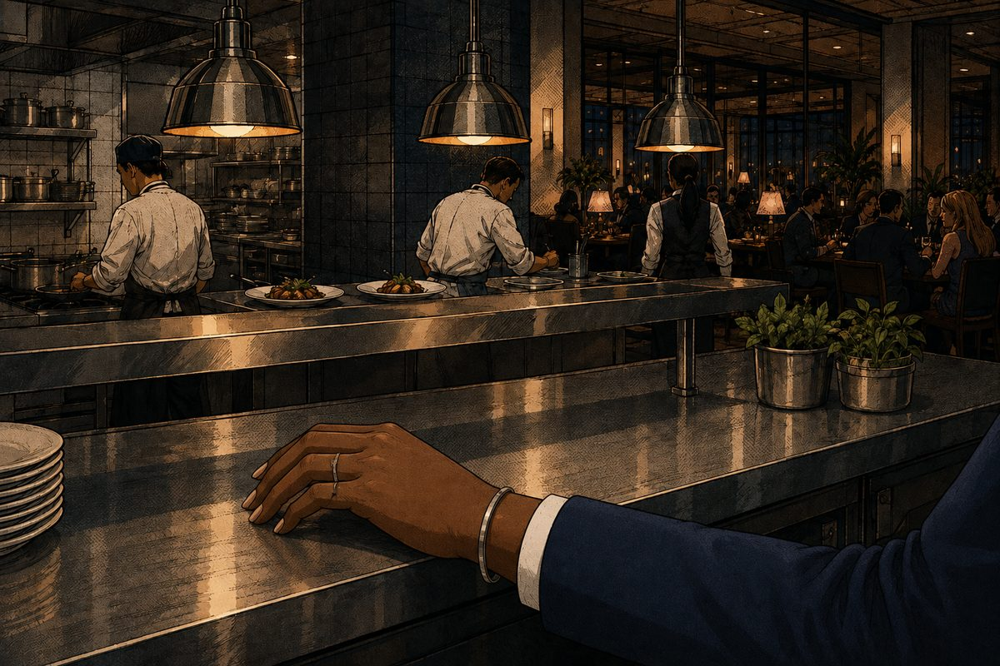
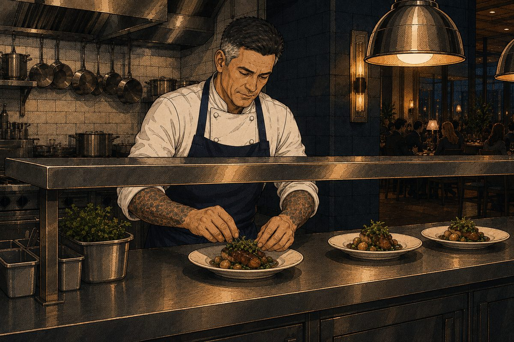
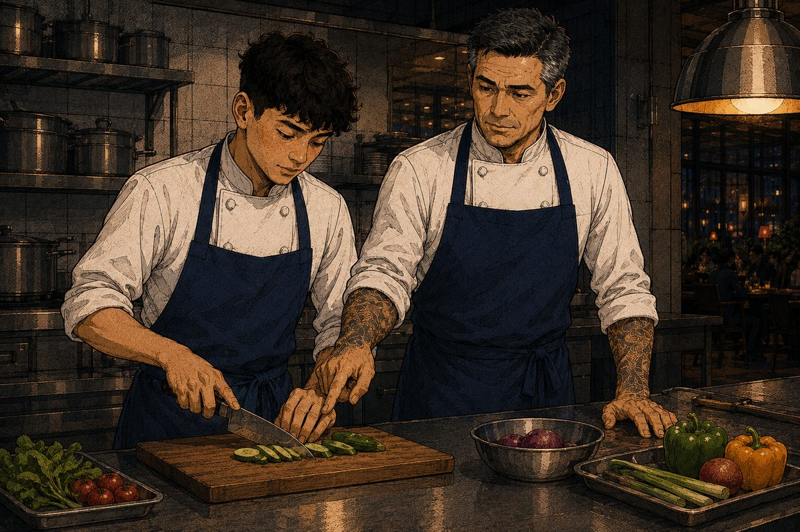
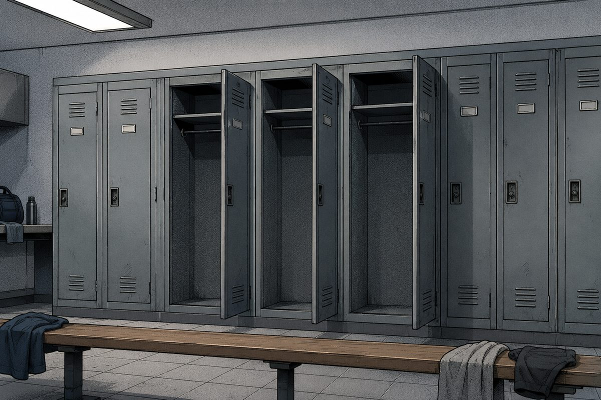
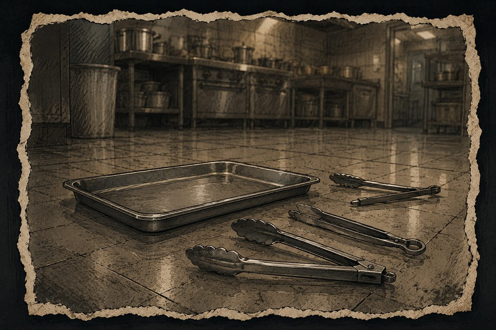
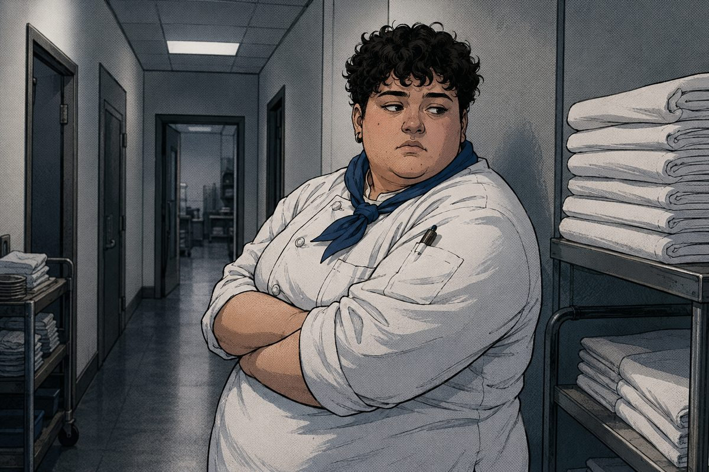
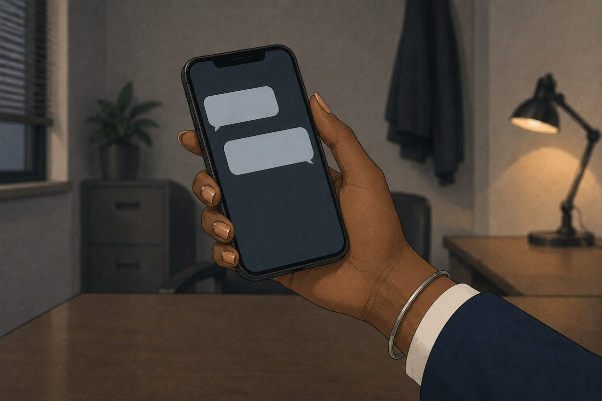

HOSP7053 Service Leadership in Hospitality · Week 3 seminar

You are Priya. You manage the restaurant at this hotel. You started five months ago.

Chef Hale runs the kitchen. He has been here seven years. The food has never been better.

He trains people well. Two of his juniors are now senior chefs at other hotels.

In the last eight months, three junior kitchen staff have left.Nina was one of them. When she left, she told you what the kitchen is like.

She said he shouts at junior staff. She said he picks on one person at a time. She said he once threw a metal tray.
Then she said: “Please do not use my name. I still need a reference.”

Yesterday Sam told you he is thinking of leaving. He asked you to say nothing as well.

HR: “Without a written complaint, I cannot open a process.”
Your manager: “The restaurant is the best part of this hotel. Do not upset the kitchen in peak season.”
Chef Hale has never been told that anyone has a problem with him.
What do you do?
It is peak season and the restaurant is fully booked for four weeks. There is no
replacement head chef available at short notice. Neither Nina nor Sam will put anything in writing.
Five things you could do
Talk to Chef Hale yourself, today, quietly. He will work out who spoke to you. Only Nina and Sam could have.
Report it to HR yourself, in writing, using what Nina and Sam told you. Their names go into a file, and Chef Hale is told there is a complaint.
Say nothing to anyone and wait until peak season is over. That is eight more weeks, and Sam may not last them.
Move Sam away from Chef Hale and reroster the juniors under the sous chef. Sam is safer. The next junior is not, and Chef Hale is never told why.
Go back to Nina and Sam and ask them to put it in writing. It is the only way a process can start. Both of them asked you not to, and Nina no longer works here.
Your group’s task, twenty minutes
Agree what you should do next.
Write down the one sentence you say to the person your decision hurts most.
There is no right answer here. Every option costs somebody something. What matters is the reason you can give the person who pays.